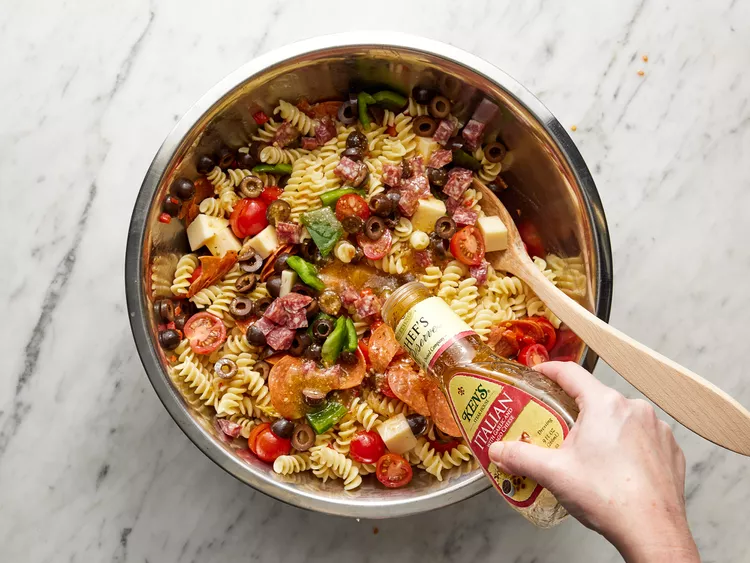

Lasagna

Description
This pasta salad with pepperoni, tomatoes, and provolone cheese is the best I've ever eaten, and people request it frequently. It's a very easy, light-tasting side dish for a picnic or dinner.
Ingredients
- Pepperoni
- Tomatoes
- Green pepper
- Red pepper
- Onion
- Cheese
- Pasta
How to make this salad:
- Gather all ingredients.
- Bring a large pot of lightly salted water to a boil. Cook fusilli in the boiling water, stirring occasionally, until tender yet firm to the bite, about 12 minutes. Drain.
- Combine fusilli with tomatoes, cheese, salami, pepperoni, green pepper, olives, and pimentos in a large bowl. Pour in salad dressing; toss to coat.
Homepage